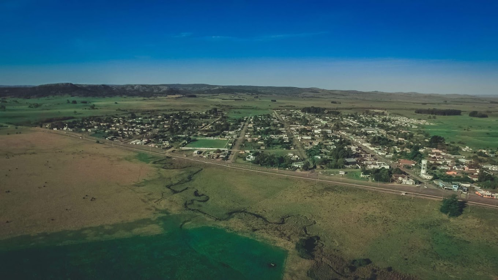
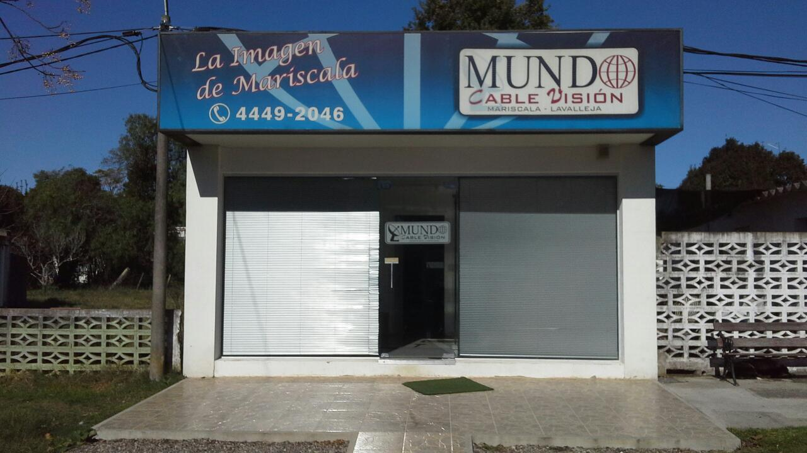
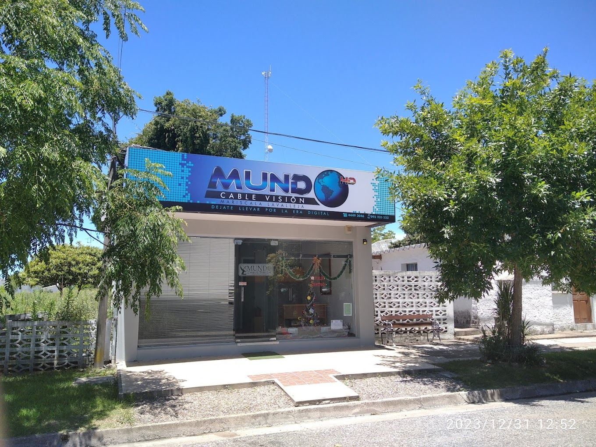

TV por cable
Televisión por cable en Mariscala, con la señal de Canal 95.

Dejate llevar por la era digital
TV por cable e internet en Mariscala y zonas rurales de Lavalleja
ContactanosMundo Cable Visión es el servicio local de televisión por cable de Mariscala y zonas rurales, ubicado en Ituzaingó casi 25 de Mayo. Funciona en conjunto con RadioCable Mariscala (Canal 95 y transmisiones de radio).
Hace años llevamos conectividad a nuestra comunidad, acompañando el crecimiento de Mariscala con nuevos servicios de televisión e internet.


Televisión por cable en Mariscala, con la señal de Canal 95.
Televisión para establecimientos y zonas rurales fuera del alcance del cable.
Conexión de alta velocidad por fibra óptica en Mariscala.
Internet inalámbrico de alta velocidad mediante tecnología LTE.
Conectividad inalámbrica pensada para el campo y zonas rurales.
Próximamente seguimos ampliando nuestros servicios.
Brindamos servicio en Mariscala y en un amplio radio de poblados y zonas rurales vecinas, con un alcance aproximado de 70 km, variable según la topografía del terreno en cada punto.
El alcance real depende de la topografía de cada zona, en especial para el sistema de televisión por microondas. Si no estás seguro de si tu ubicación tiene cobertura, contactanos y lo verificamos con nuestras herramientas de planificación de red.
Nos ubicamos en la esquina de Ituzaingó y 25 de Mayo, en pleno Mariscala. Como en el pueblo las calles no tienen numeración, guiate por el cartel celeste de Mundo Cable Visión en la esquina — es fácil de reconocer.
Cómo llegar en Google Maps